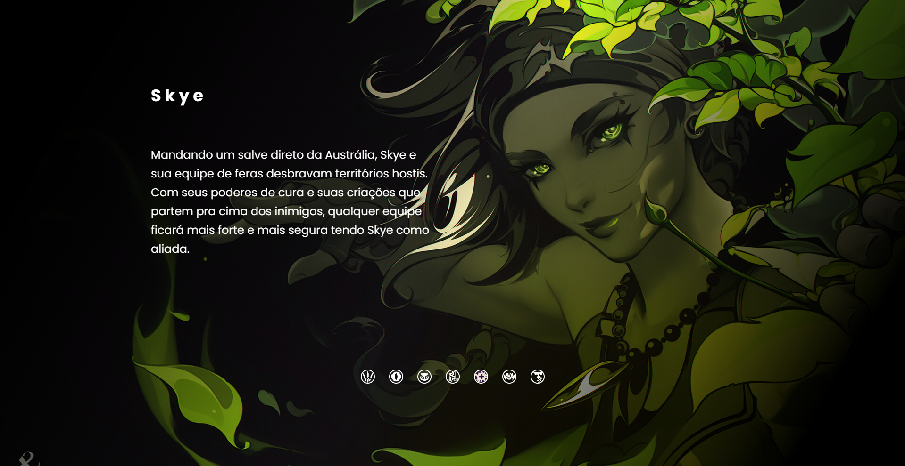

Últimos projetos





"Eu sou John Frank, um desenvolvedor full-stack e web designer especializado em criar experiências digitais dinâmicas e responsivas. Com uma paixão por soluções de front-end e back-end, transformo ideias em interfaces intuitivas, aliando estética e funcionalidade para entregar projetos inovadores e eficientes."
"Atualmente, estou me especializando em desenvolvimento front-end, com foco em criar interfaces modernas e otimizadas para uma experiência de usuário fluida e atraente. Ao dominar ferramentas como HTML, CSS, JavaScript e frameworks populares, estou preparado para desenvolver projetos web que aliam design sofisticado e alta performance, entregando soluções visuais interativas e responsivas."
Ler mais"Estou focado em aprimorar minhas habilidades na parte de back-end, aprendendo tecnologias e práticas essenciais para oferecer soluções robustas e escaláveis. Com esse conhecimento, estou me preparando para me tornar um desenvolvedor full-stack, capaz de lidar com todas as camadas de uma aplicação, do servidor ao front-end, proporcionando uma experiência completa e integrada."
Ler mais"Trabalho com desenvolvimento mobile, criando layouts responsivos e intuitivos que se adaptam perfeitamente a diferentes tamanhos de tela. Utilizando tecnologias modernas e práticas de design, meu foco é oferecer uma experiência de usuário otimizada e fluida em dispositivos móveis, garantindo funcionalidade e performance em qualquer plataforma."
Ler mais
"Com 37 anos, sou desenvolvedor front-end dedicado, em transição para full-stack, estudando na Rocketseat. Minha competência, capacidade de aprendizado rápido e paixão por tecnologia me impulsionam a entregar soluções eficientes e responsivas, sempre buscando novos desafios."
Ler mais